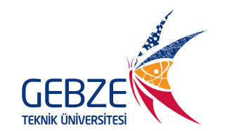

My first paragraph.
This is a red paragraph.
This is a marked text
This is a deleted text
This is an inserted text
-Hover over me-
This is the most comprehensive resource for software
Şimdi sen kalkıp gidiyorsun. Git
Gözlerin durur mu onlar da gidiyorlar. Gitsinler.
Oysa ben senin gözlerinsiz edemem bilirsin
Oysa Allah bilir bugün iyi uyanmıştık
Sevgideydi ilk açılışı gözlerimizin sırf onaydı
Bir kuş konmuş parmaklarıma uzun uzun ötmüştü
Here is a introduction for GTU MIS:
Günümüzde bilişim teknolojilerinin artan önemiyle, işletmeler ileri derecede rekabetçi ve küresel piyasalarda kendileri için fark yaratacak potansiyel projelere özel ilgi göstermekte ve kaynaklarını bu çeşit faaliyetlere yönlendirmektedirler. Buna bağlı olarak da bilgiyi, teknolojiyi ve insanları birlikte yönetebilecek bireylere olan ihtiyaç her yerde artmaktadır. Yönetim Bilişim Sistemleri, işletme ve bilişim konularını birleştiren bir alandır. Günümüzde bilişim alanındaki gelişmelerin işletme bilimine getirdiği yeniliklerle birlikte çok daha etkin ve verimli karar verme süreçleri ortaya çıkmıştır. Ayrıca bilgi sistemlerinin yönetimi başlı başına bir yönetim konusu haline gelmiştir. Yönetim ve bilişimin hayatın hemen her alanını kapsadığı düşünüldüğünde, Yönetim Bilişim Sistemleri geliştirecek ve yönetecek yönetsel becerilere sahip bireylerin yetiştirilmesi önem arz etmektedir.S Bu kapsamda, Yönetim Bilişim Sistemleri programlarımız öğrencilere programlama dilleri, bilgisayar ve ağ teknolojileri, veri tabanı, teknoloji trendleri, ekonomi, e-ticaret ve yazılım projelerinin yönetimi konularında yoğun bilgi sağlayacak biçimde tasarlanmıştır. Ayrıca öğrencilerimize pazarlama, yönetim ve organizasyon, finans, istatistik, karar alma teknikleri gibi alanlarda dersler de sunulmaktadır.
This is a short quotation.
GTÜ was founded in 1992.
You can find me below!
Enes Can